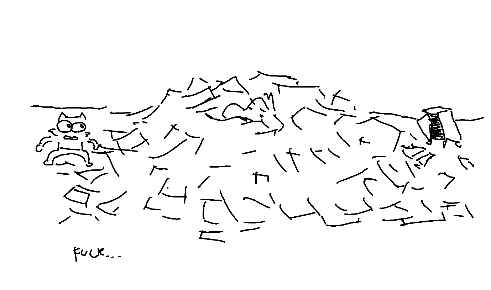
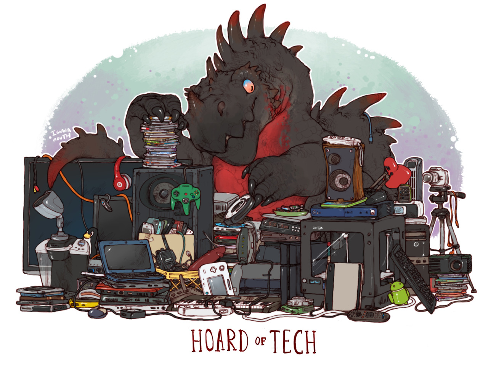
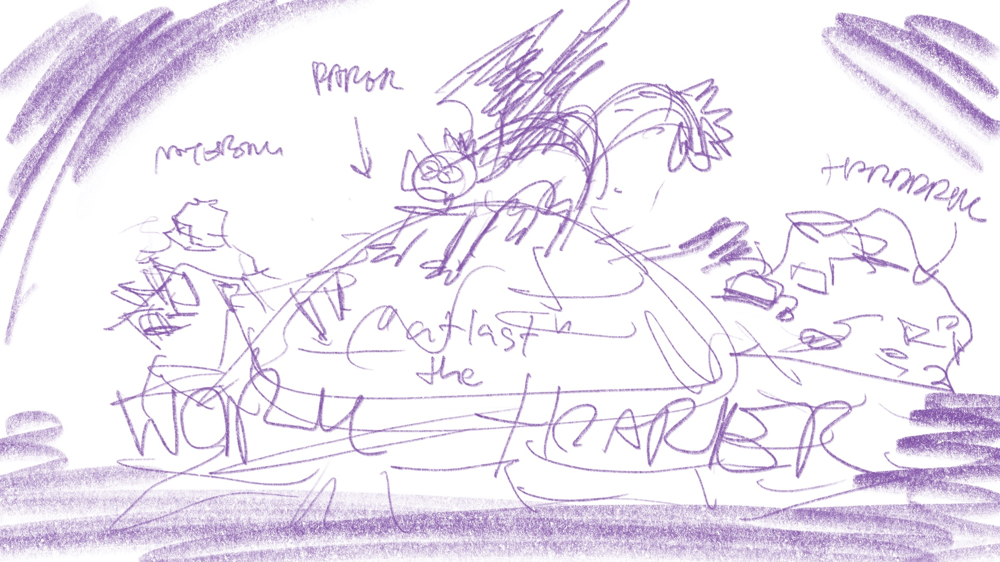
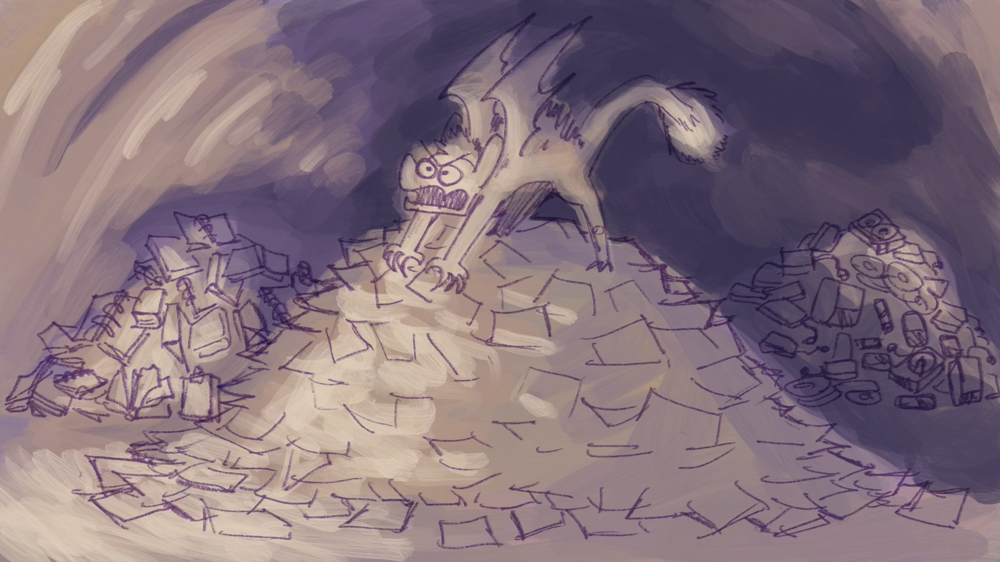
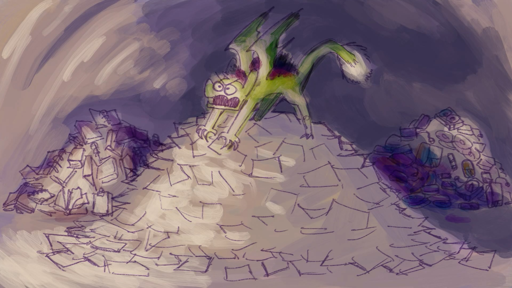
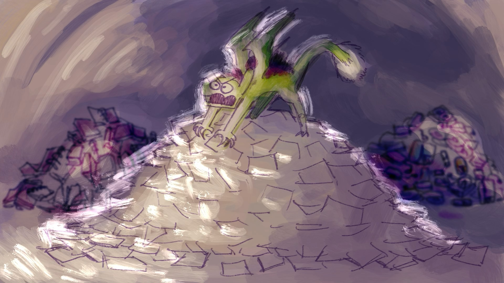
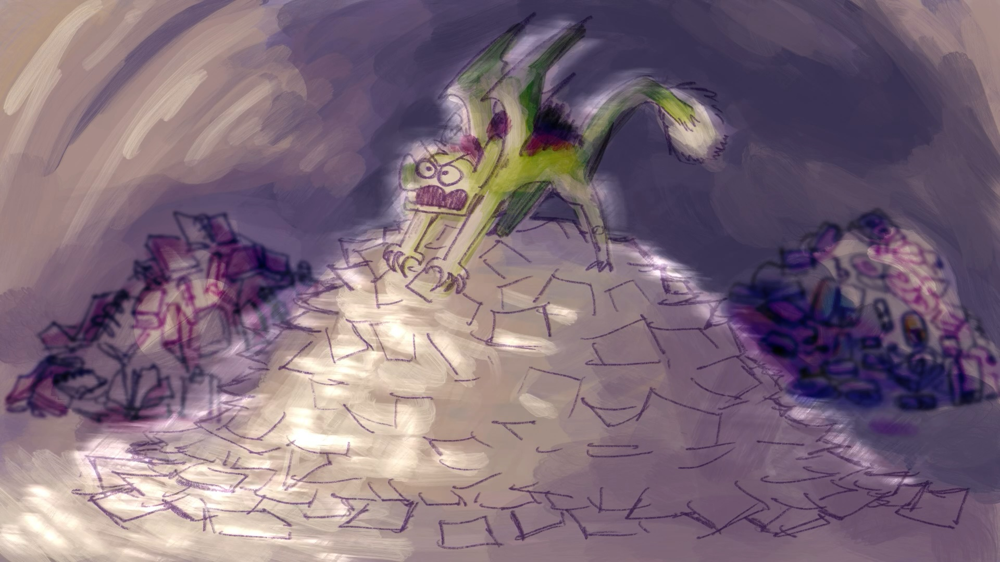
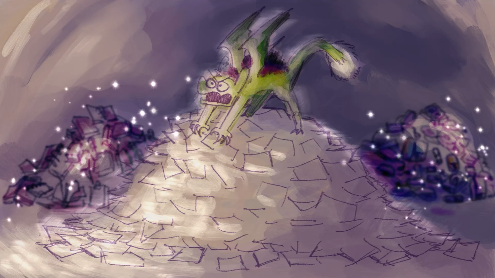
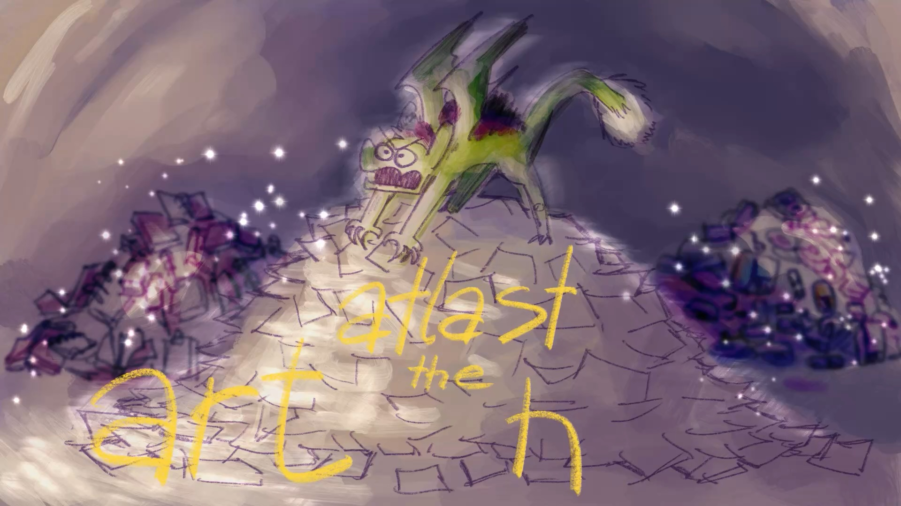

Behind the art: The Art Hoarder has been founded!

He has been founded!
This illustration came from my first snippets of me complaining about my unfinished work that gets piled behind the scene - that might not be able to see the light. They collected over the years - decade even - so that when I’ve got the courage to revisit them; It overwhelms me completely.

Then I think of the Illustration of the pieces about dragon hoarding things. It might be a long time since I saw that but it sparked the new idea of me being some kind of dragon or kobold - like acted like a hoarder of something like this. This sounded funny in my head - so I began to explore.

I imagined myself on top of the mountains of papers, notebooks and hard drives - all of the things that stores all of my artworks, real or digitally. It’s a simple idea with simple layout in mind, not to much of a depth in terms of perspective or realism; Just an illustration of some freaky monster that, in a fantasy world, would be founded in caves or deep dark corners of the mountains. ‘Cause you know, artists just like being in their own personal space that don’t want anyone near them when they’re at work (They’re the same!)
Then I just sketches them quickly, roughly 15 minutes.

At first, I named him the work hoarder. It sounded right to me, but as I repeated the name, in my head, I’m still not satisfied with it. It doesn’t have a nice ring to it; But I digressed and took a break from the piece before picking it up the next day.
The brushes I used for this piece contains a variety of tools - Pencil, Dry Acrylic, Dry Painted Brush. I’ve planned to used blur and lower values to the two back mountains to be able to push the front towards the views - as I’m establishing my foreground to be a light from a torch - or flashlight - that shone through the cave and met with this gremlin.

I just paint all the key colors and values in one layer so I haven’t got much control on the separation so I resort to use a manual brush to push some highlight into the rim of the middle pile and the gremlin (I don’t know why I kept calling him that lol)

And finally, some layer styles I didn’t even think of using it - Color Burn. I tested them on the color of the gremlin’s skins and things in the background pile; It worked! It just makes the underlaying color that I want pops out but still not distracted from the main point of the artwork.


Then, I added the highlight rims that would push out more of the main point of the artwork; But I thought it’s too harsh so I played with the motion blur effects - and even by do it by hands!

I don’t know why I add the glitters to be honest. I might thought that all the objects in the pile would reflected some light back at the sources - or maybe that the pile itself was sitting there until it starts to get some unnatural elements; I’m not sure either but it makes this more magical would you think?
Coming back to the naming issue.
As I’m working on the last thing in this piece; I’ve concluded that atlast, the art hoarder would be the final name. Why changing work to art? Well, first it rhymes! atlast. art. Second is that the word “art” would suited my expression on my line of work more than the word “work”; because work could mean anything - writing, research paper, thesis. They didn’t represent my message here - that I have many clutters of un-published work that I’ve sat on. So art it is!

As I’m finishing this artwork with the labeling; I am met with a situation. The word “Hoarder” doesn’t fit as a centered paragraph! - with this layout anyway. So I’ve reposition it in the right corner instead. Add duplicated; Aligned it just to the right and below - changing the color - so that it acts like a shadow.
And, Tada!
I think this artwork delivers what I’ve imagined it - for more or least.
What do you think about it? Let me know in the comment section.
Until next time, Cherish you love! ❤️